¿Por qué este y no otro?
Las razones que nos llevaron a eleguir este Dataset
La elección del conjunto de datos de los resultados de las pruebas Saber 11 del año 2020 se fundamenta en la relevancia que tiene este examen estandarizado en el contexto educativo colombiano. Estas pruebas ofrecen una visión integral del rendimiento académico de los estudiantes al culminar la educación secundaria, permitiendo así un análisis profundo de los factores que inciden en su desempeño.
La riqueza de variables presentes en los resultados de las pruebas Saber 11, que abarcan desde puntajes específicos en diversas áreas como matemáticas, ciencias, lectura, hasta información demográfica detallada de los estudiantes y características de las instituciones educativas, proporciona un panorama completo y multidimensional. Este amplio espectro de datos es esencial para abordar investigaciones en el campo de la educación, permitiendo identificar patrones, tendencias y relaciones que pueden ser cruciales para el diseño e implementación de políticas educativas efectivas.
La disponibilidad y accesibilidad del conjunto de datos del año 2020 facilitan significativamente la ejecución del proyecto, permitiendo una exploración exhaustiva y análisis detallados. Además, la diversidad de información presente en este conjunto de datos ofrece una oportunidad única para aplicar una variedad de técnicas avanzadas de minería de datos, como clasificación, regresión, clustering y asociación. Estas técnicas permitirán extraer conocimientos valiosos que contribuirán a la comprensión integral de los factores que influyen en el rendimiento académico de los estudiantes colombianos, respaldando así la toma de decisiones informadas en el ámbito educativo.
Vista rápida de los Datos
Algunas observaciones interesantes
Distribución de los puntajes en las pruebas Saber
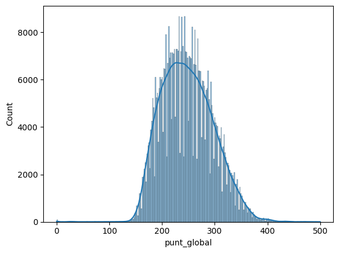¿Influyen las caracteristicas de la familia en los resultados?
Estrato vivienda
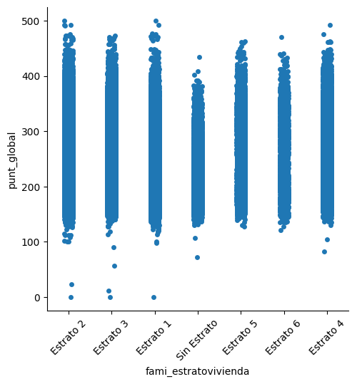Personas hogar
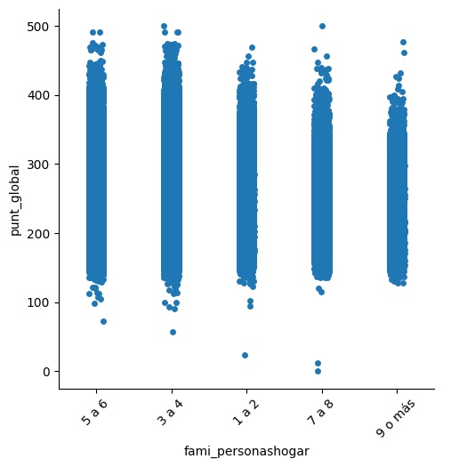Tiene internet
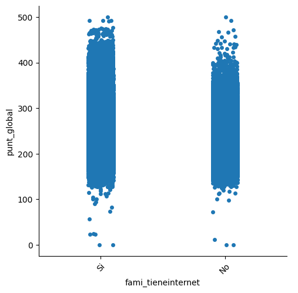Tiene servicio TV
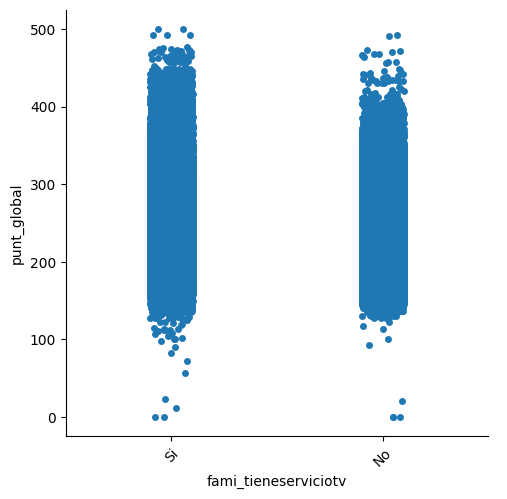Tiene Computador
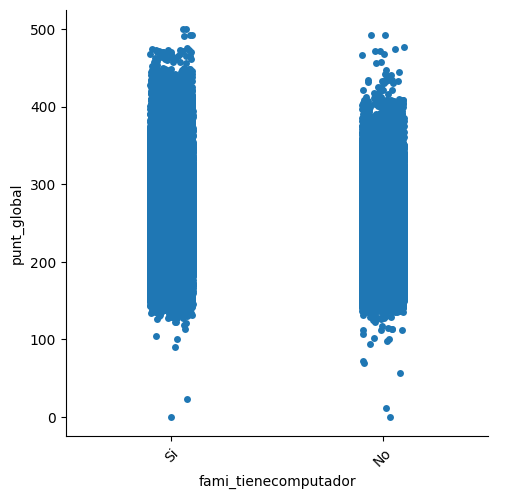Tiene horno microondas o gas
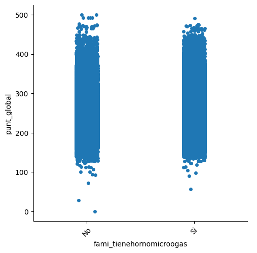Tiene automovil
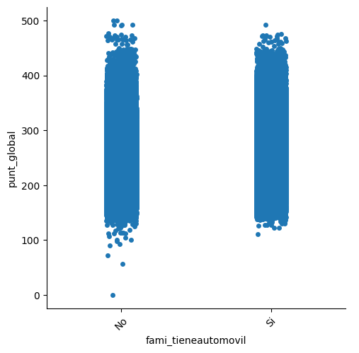Tiene motocicleta
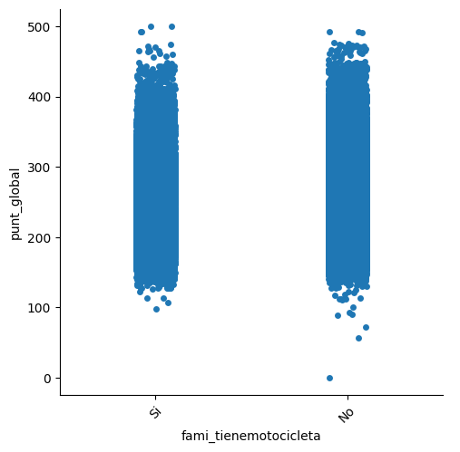Tiene consola de videojuegos
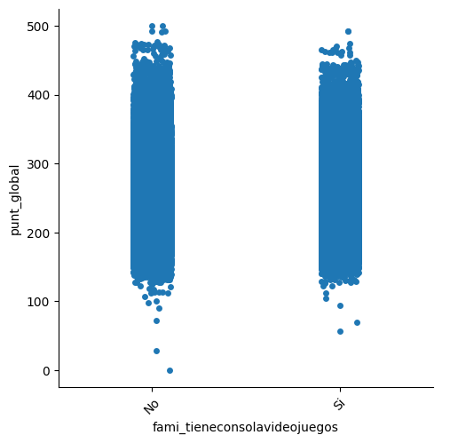Numero de libros

Come leche o derivados
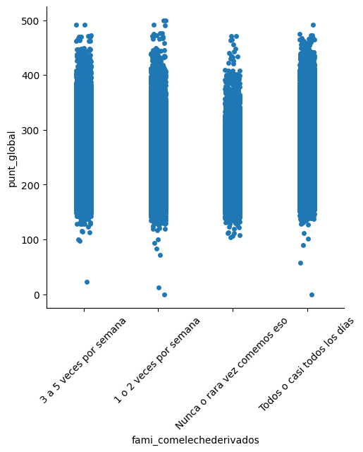Come cereal, frutos o legumbre
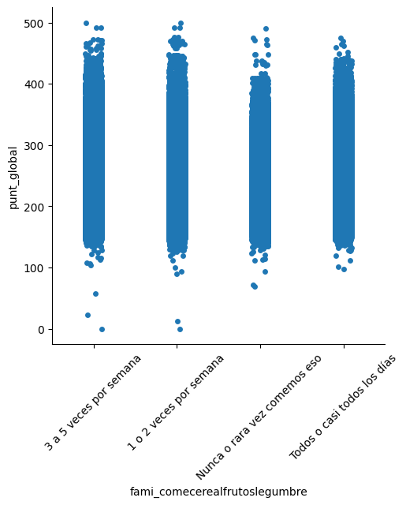Come carne, pescado o huevo
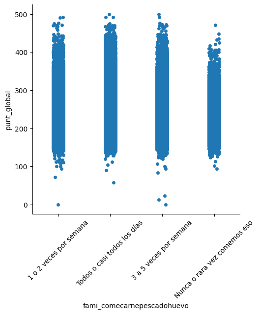Situación económicoa
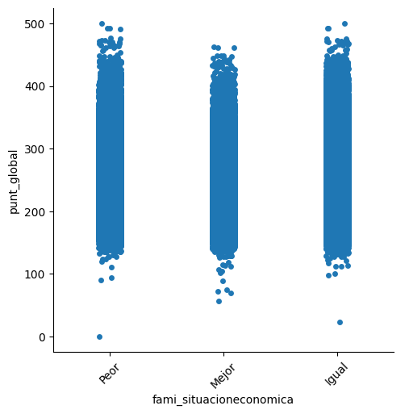Analizando los datos de las pruebas Saber 11 del año 2020 en los aspectos relacionados con la familia, que si bien son factores que pueden influir en el rendimiento académico de los estudiantes, no parecen ser por si solos hacer la diferencia. Sabemos estos factores pueden ser determinantes en la calidad de vida y el acceso a recursos y oportunidades que impactan directamente en el desempeño académico. Por tanto es pertienente revisar si la combianción de estos factores tiene el impacto significativo en el rendimiento académico esperado.
Hipótesis
Algunas ideas que queremos explorar
A partir de la exploración inicial de los datos, se plantean las siguientes hipótesis que se buscarán validar a través de la aplicación de técnicas de minería de datos:
1. El rendimiento académico de los estudiantes está influenciado por factores socioeconómicos, como el estrato socioeconómico, el número de personas en el hogar, la disponibilidad de servicios como internet, televisión, computador, entre otros, y la situación económica de la familia.
2. Las características de las instituciones educativas, como el tipo, la jornada, la ubicación y el tamaño, tienen un impacto significativo en el rendimiento académico de los estudiantes.
3. Existen patrones y tendencias en los puntajes obtenidos en las diferentes áreas de las pruebas Saber 11, que permiten identificar grupos de estudiantes con desempeños similares y establecer relaciones entre las variables presentes en el conjunto de datos.
4. La aplicación de técnicas de minería de datos, como clasificación, regresión, clustering y asociación, permitirá identificar patrones, tendencias y relaciones ocultas en los datos que contribuirán a la comprensión integral de los factores que influyen en el rendimiento académico de los estudiantes colombianos.
Objetivos para la estimación
1. Identificar la influencia de variables socioeconómicas familiares en la probabilidad de aprobación de las pruebas Saber 11.
2. Evaluar el rendimiento de distintos modelos en la predicción de la aprobación de las pruebas Saber 11 a partir de características familiares
3. Determinar la probabilidad de que un estudiante quede en cierto cuartil teniendo en cuenta las variables familiares y el departamento donde este reside.
Modelo 1 - Regresión Logística
Detalles
Detalles sobre la selección inicial del modelo
Para el primer modelo, se optó por utilizar regresión logística debido a su capacidad para predecir una variable binaria, como es el caso de la aprobación o no aprobación de las pruebas Saber 11. Se ajustaron los datos creando una nueva columna que indica si el puntaje global es mayor o igual a 300, clasificándolo como aprobado, o menor a 300, clasificándolo como no aprobado. El modelo fue entrenado para predecir si un estudiante aprobará o no la prueba basándose en características socioeconómicas familiares.
Métricas
Métodos de validación y métricas empleadas
Accuracy
85.54%
La exactitud (Accuracy) representa la proporción de predicciones correctas realizadas por el modelo sobre el total de predicciones. En este caso, el 85.54% de las predicciones fueron correctas.
Recall
| Clase Negativa (No Aprobado) | Clase Positiva (Aprobado) | |
|---|---|---|
| Recall | 98.02% | 19.01% |
El Recall representa la proporción de casos positivos que fueron correctamente identificados por el modelo. Los valores indican que se identificaron correctamente el 98.02% de los casos negativos (no aprobado) y el 19.01% de los casos positivos (aprobado).
Precisión
| Clase Negativa (No Aprobado) | Clase Positiva (Aprobado) | |
|---|---|---|
| Precisión | 86.58% | 64.24% |
La Precisión representa la proporción de casos positivos clasificados correctamente por el modelo sobre el total de casos positivos predichos. Los valores indican que el 86.58% de los casos negativos (no aprobado) y el 64.24% de los casos positivos (aprobado) fueron clasificados correctamente.
Matriz de Confusión
| Predicción Negativa | Predicción Positiva | |
|---|---|---|
| Real Negativa | 83345 | 1687 |
| Real Positiva | 12912 | 3031 |
La matriz de confusión muestra el desempeño del modelo al clasificar las instancias en cada una de las clases. En este caso, la primera fila representa las instancias verdaderamente negativas y la segunda fila representa las instancias verdaderamente positivas. Las columnas representan las instancias clasificadas por el modelo como negativas y positivas, respectivamente.
- Se utilizó la métrica de precisión (precision) para evaluar la proporción de casos clasificados como positivos que realmente lo son, y el recall para evaluar la proporción de casos positivos que fueron correctamente identificados por el modelo.
- La precisión y el recall se calcularon tanto para la clase positiva (aprobado) como para la clase negativa (no aprobado).
- Se empleó la métrica de exactitud (accuracy) para evaluar la proporción de predicciones correctas realizadas por el modelo en relación con el total de predicciones.
- Se utilizó la matriz de confusión para visualizar el desempeño del modelo en la clasificación de los casos.
Conclusiones Preliminares
Después de analizar las métricas obtenidas de nuestro modelo de regresión logística aplicado a los datos de las pruebas Saber 11 del año 2020, podemos destacar lo siguiente:
- La tasa de recall para la clase positiva (aprobado) fue baja, lo que indica que el modelo tuvo dificultades para identificar correctamente los casos de estudiantes que aprobaron las pruebas Saber 11.
- A pesar de la alta precisión para la clase negativa (no aprobado), el modelo cometió un número considerable de falsos negativos, lo que sugiere que podría haber variables adicionales que influyen en la aprobación de las pruebas Saber 11 y que no fueron consideradas en este primer análisis.
- Es importante tener en cuenta el desequilibrio de clases en los datos. Dado que hay muchos más casos de estudiantes no aprobados que aprobados (424974 contra 79898), el modelo puede tener una precisión alta simplemente prediciendo que todos los estudiantes no aprobaron. Esto subraya la importancia de evaluar el modelo utilizando otras métricas, como el recall y la matriz de confusión, para tener una evaluación más completa de su efectividad.